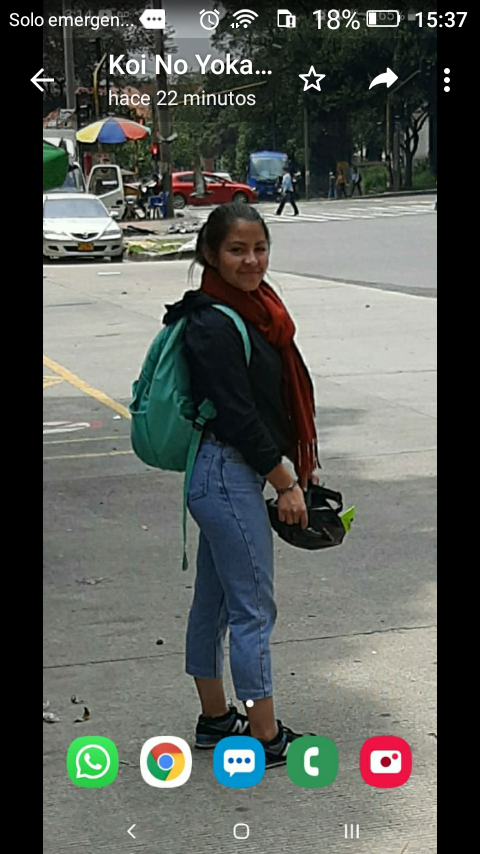

sobre mi
Técnica en redes LAN egresada del colegio José María Córdoba Me considero una persona integral, que busca oportunidades de crecimiento para mejorar tanto personalmente como laboralmente. Dispuesta a cumplir con responsabilidad y disciplina los trabajos y proyectos, Buscando soluciones a las dificultades que se puedan presentar durante el desarrollo de las actividades.
Mi favorito
Muchos de nuestros sueños parecen al principio imposibles, luego pueden parecer improbables, y luego, cuando nos comprometemos firmemente, se vuelven inevitables.